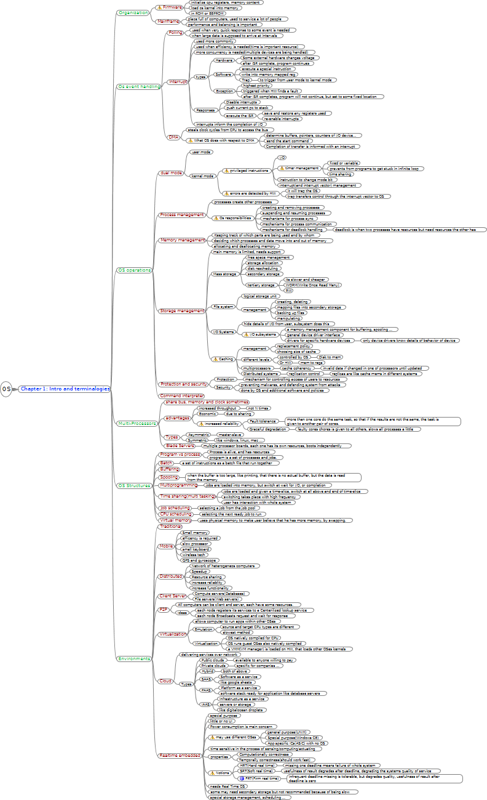

OS

OS
Chapter 1: Intro and terminalogies
Organization
Firmware
initialize cpu registers, memory content
load os kernel into memory
in ROM or EEPROM
Mainframe
place full of computers, used to service a lot of people
performance and balancing is important
Os event handling
Polling
used when very quick response to some event is needed
when large data is supposed to arrive at intervals
Interrupt
used more commonly
used when efficiency is needed(time is important resource)
more concurrency is needed(multiple devices are being handled)
types
Hardware
Some external hardware changes voltage
after ISR complete, program continues
Software
execute a special instruction
write into memory mapped reg
Trap
to trigger from user mode to kernel mode
Exception
highest priority
triggered when HW finds a fault
after ISR completes, program will not continue, but set to some fixed location
Responses
Disable interrupts
push current pc to stack
execute the ISR
save and restore any registers used
re-enable interrupts
interrupts inform the completion of I/O
DMA
steals clock cycles from CPU to access the bus
What OS does with respect to DMA
determine buffers, pointers, counters of I/O device...
send the start command
Completion of transfer is informed with an interrupt
OS operations
dual mode
user mode
kernel mode
privilaged instructions
I/O
timer management
fixed or variable
prevents from programs to get stuck in infinite loop
time sharing
instruction to change mode bit
interrupt(and interrupt vector) management
errors are detected by HW
it will trap the OS
trap transfers control through the interrupt vector to OS
Process management
processes create other processes
Os responsibilities
creating and removing processes
suspending and resuming processes
mechanisms for process sync
mechanisms for process communication
mechanisms for deadlock handling
deadlock is when two processes have resources but need resources the other has
Memory management
Keeping track of which parts are being used and by whom
deciding which processes and data move into and out of memory
allocating and deallocating memory
Storage management
main memory is limited, needs support
Mass storage
free space management
storage allocation
disk rescheduling
secondary storage
tertiary storage
its slower and cheaper
WORM(Write Once Read Many)
RW
File system
logical storage unit
management
creating, deleting
mapping files into secondary storage
backing up files
manipulating
I/O Systems
hide details of I/O from user, subsystem does this
I/O subsystems
a memory management component for buffering, spooling ...
general device driver interface
drivers for specific hardware devices
only device drivers know details of behavior of device
Caching
management
replacement policy
choosing size of cache
different levels
controlled by OS
Disk to mem
Or HW
mem to regs
multiprocessors
cache coherency
invalid data if changed in one of processors until updated
Distributed systems
replication control
replicas are like cache mems in different systems
Protection and security
Protection
mechanism for controlling access of users to resources
Security
preventing malwares, and defending system from attacks
done by OS and additional software and policies
Command interpreter
Multi-Processors
share bus, memory and clock sometimes
advantages
increased throughput
not N times
Economic
due to sharing
Increased reliability
Fault tolerance
more than one core do the same task, so that if the results are not the same, the task is given to another pair of cores.
Graceful degradation
faulty cores chores is given to all others, slows all processes a little
Types
Asymmetric
master-slave
Symmetric
like windows, linux, mac ...
Blade Servers
multiple processor boards, each one has its own resources, boots independently
OS Structures
Program vs process
Process is alive, and has resources
program is a set of processes and jobs.
Batch
a set of instructions as a batch file that run together
Buffering
Spooling
when the buffer is too large, like printing, that there is no actual buffer, but the data is read from the memory
Multiprogramming
jobs are loaded into memory, but switch at wait for I/O, or completion
Time sharing(multi tasking)
jobs are loaded and given a time-slice, switch at all above and end of time-slice
switching takes place with high frequency
user has interaction with whole system
Job scheduling
selecting a job from the job pool
CPU scheduling
selecting the next ready job to run
Virtual memory
uses physical memory to make user believe that he has more memory, by swapping.
Environments
Traditional
Mobile
Small memory
efficency is required
slow processor
small keyboard
wireless tech
GPS and gyroscope
Distributed
Network of heterogeneos computers
Speedup
Resource sharing
increase reliablity
increase functionality
Client Server
Compute servers(Databases)
File servers(Web servers)
P2P
All computers can be client and server, each have some resources.
Ideas
each node registers its services to a Centerilized lookup service
each node Broadcasts request and wait for response
Virtualization
allows computer to run apps within other OSes
Emulation
source and target CPU types are different
slowest method
Virtualization
OS natively compiled for CPU
OS runs guest OSes also natively compiled
a VMM(VM manager) is loaded on HW, that loads other OSes kernels
Cloud
delivering services over network
Types
Public clouds
available to anyone willing to pay
Private clouds
specific for companies ...
Hybrid
both of above
SAAS
Software as a service
like google sheets
PAAS
Platform as a service
software stack ready for application like database servers
IAAS
Infrastructure as a service
servers or storage
like digitalocean droplets
Realtime embedded
special purpose
little or no UI
Power consumption is main concern
may use different OSes
general purpose(UNIX)
Special purpose(Windows CE)
App specific ICs(ASIC) with no OS
time sensitive in the process of sensing/computing/actuating
properties
Computationally correctness
Temporally correctness(should work fast)
Notions
HRT(Hard real time)
missing one deadline means failure of whole system
SRT(Soft real time)
usefulness of result degrades after deadline, degrading the systems quality of service
FRT(Firm real time)
infrequent deadline missing is tolerable, but degrades quality, usefulness of result after deadline is zero
needs Real Time OS
some may need secondary storage but not recommanded because of being slow
special storage management, scheduling ...